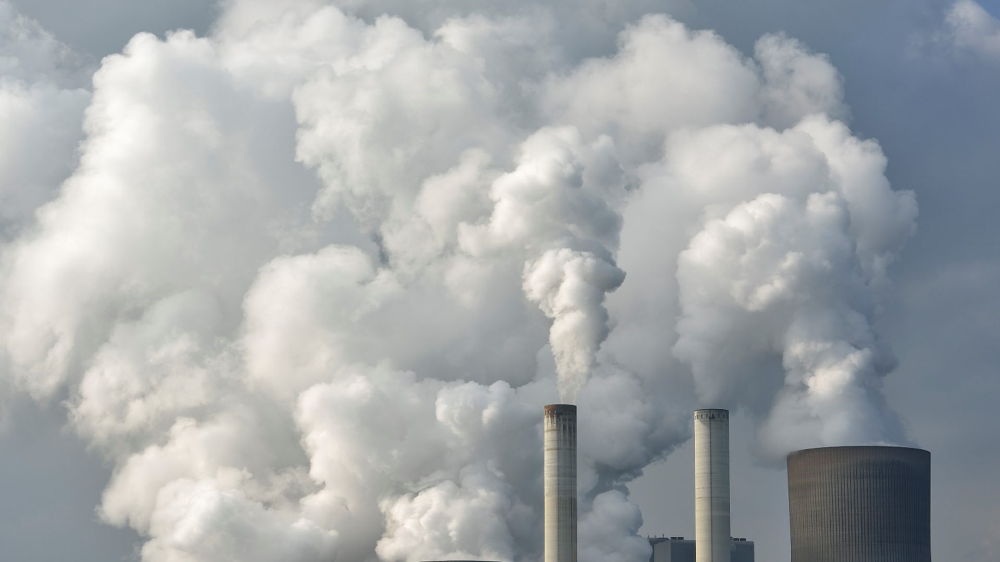
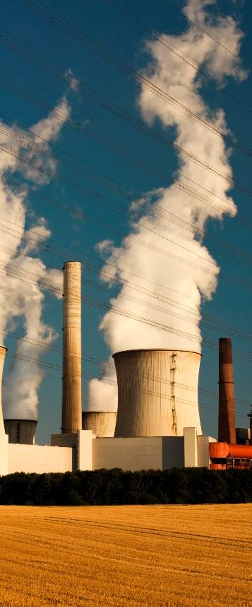
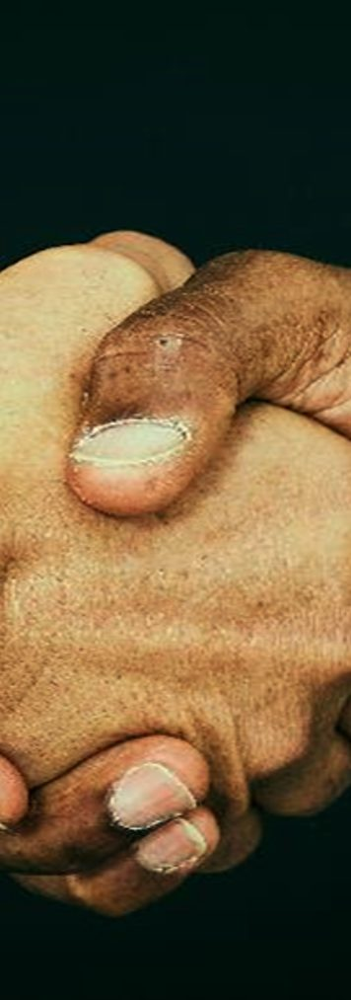
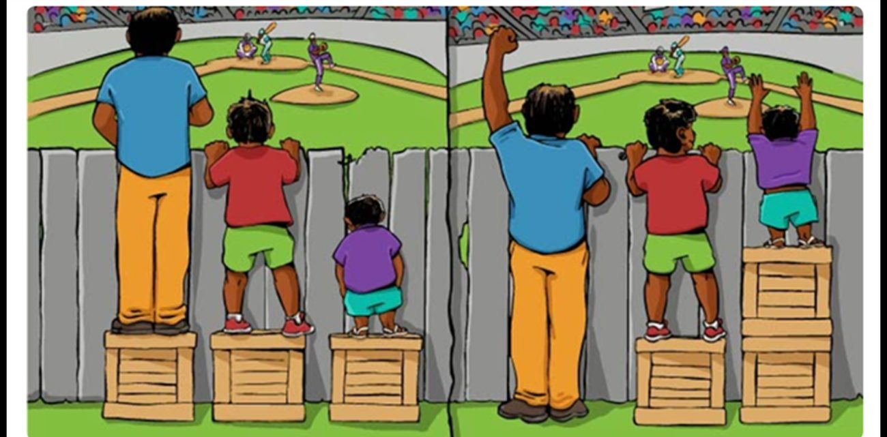
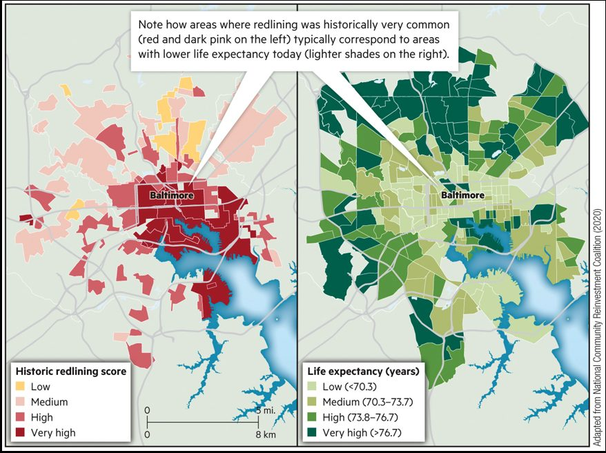
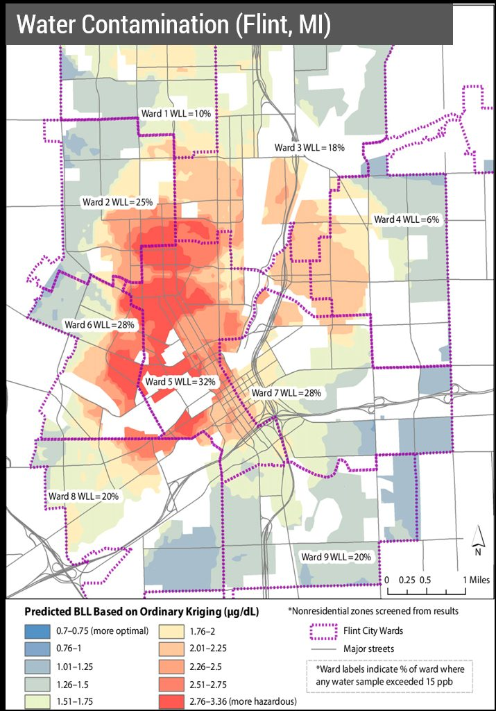
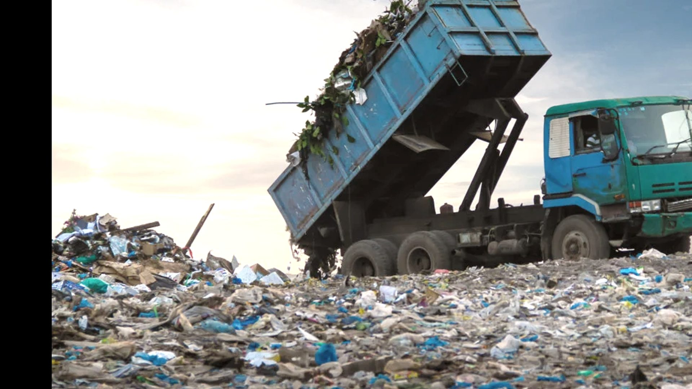

Environmental health and justice
Where you live changes what you breathe, drink and risk. Is that fair?
Photo: instructor's lecture slides
Key terms for today
In which year did the Voting Rights Act forbid states from discriminating against voters?
Today's big ideas

1 · Environmental healthHow does the place you live affect your health?
Air, water, food, noise and green space all shape health where people live, work and play.

2 · Environmental justiceWho carries the burdens?
Some groups get fewer benefits and more pollution than others. Equality gives everyone the same. Equity gives each person what they need.
Why does the same hazard hurt some people more?
Exposure, sensitivity and the ability to cope decide the harm. Fair outcomes need fair sharing and a fair voice.
Enter today's code
Your instructor shows a code on screen at the start of class. Checking in counts toward your participation grade.
Which of these is NOT typically an environmental justice issue?
Voting rights in the United States
Voting is limited to property owners, mostly white men over 21.
States are given the power to regulate voting rights.
The 14th Amendment gives former slaves citizenship, but only men can vote.
The 15th Amendment removes race as a barrier to voting, but states keep discriminating.
The 19th Amendment gives women the right to vote.
Native Americans are granted citizenship and voting rights.
People of Asian ancestry are granted citizenship and the right to vote.
The Voting Rights Act forbids states from discriminating against voters.
Warm-up answer: C, 1965. Timeline from the instructor's lecture slides.
Voting is the foundation of representation
Voting gives the public a voice
Voting is the very foundation of democracy. It makes the government legitimate in the eyes of the public.
Elected officials decide
All environmental and sustainability policies are affected, directly or indirectly, by the decisions of elected officials.
No voice, no priority
When a group is not represented, its needs can be left off the agenda and left out of how resources are shared.
Quick question: how could a lack of votes lead to a polluted neighborhood?
Tap to check.
Officials answer to the people who vote. If a neighborhood has little voice, its needs like clean air and water can end up last on the list, and projects that bring pollution can end up there first.
Five things that shape your health
Environmental health studies how the world around us affects our health. Tap the numbers to see five examples.
Food that is close, fresh and affordable
Limited access to healthy food can increase the risk of obesity and diabetes. A neighborhood with only fast food and corner stores makes the healthy choice the hard choice.
Safe water is basic health
Contaminated water sources can cause poisoning and other health risks. We look at one real case, Flint, Michigan, later in this lecture.
Noise is a pollutant too
Environmental noise, like traffic or planes, can disrupt sleep and cause stress-related health problems.
What you breathe matters
Polluted air can lead to serious health issues like asthma and heart disease. Living next to a factory or a busy road raises how much polluted air you breathe.
Parks are good for the mind
Access to green spaces can improve mental health and thinking. Trees also give shade and clean the air.
How do we find out what harms health?
Epidemiology
Look for patterns in people
Studies who gets sick, where, and why across a whole population. Example: do asthma rates rise near busy roads?
Toxicology
Test how a substance harms
Studies the harmful effects of chemicals and pollutants on living things. Example: how much lead is too much for a child?
Public health
Protect whole communities
Uses what we learn to set rules, give warnings and run programs that keep people healthy. Example: testing school water.
Quick question: a doctor sees many children on one street with asthma. Which science looks for the pattern?
Tap to check.
Epidemiology. It compares groups of people to find where an illness is common and what they share. Toxicology could then test whether a pollutant there is the cause.
Environmental health vs. environmental justice
Environmental health
How do environmental factors affect the places people live, work and play?
The study of how the physical, chemical and biological world affects people's health.
Environmental justice
How do some environmental health issues create more burdens for some people than for others?
Benefits and burdens are often shared unevenly, especially for low-income and minority groups.
Ethics, equity and environmental justice
Quick question: why do the burdens end up unequal?
Tap to check.
Three reasons from the lecture: scarcity (there is not enough good land, air and water for everyone), a lack of benevolence (people look after themselves first), and uneven power (some groups have a bigger voice).
Equality and equity

Quick question: who still cannot see on the left?
Tap to check.
The shortest person. The same box does not fix a bigger barrier. On the right, each person gets what they need, so everyone can see the game.
Try it: equality or equity?
Quick question: which one gives everyone the same outcome?
Tap to check.
Equity. Equality gives everyone the same box, but the shortest person still cannot see. Equity gives each person what they need, so all can see.
Teaching drawing, not to scale. Definitions from the instructor's lecture slides.
Sustainability needs fairness and justice for all
Benefits are not shared evenly
Clean water, clean air and other ecosystem services are not equally or fairly spread across groups.
Burdens fall unevenly
Environmental "bads", or externalities, hit low-income and racial minority groups harder.
Environmental justice milestones
Residents protest after a neighborhood is found built over buried toxic waste.
Protests against a landfill sited in a mostly African-American, low-income community.
3 out of 4 hazardous waste landfills in the South were in minority and low-income communities.
The first national People of Color Environmental Leadership Summit.
A presidential order tells federal agencies to address environmental justice.
Quick question: what do these events have in common?
Tap to check.
Ordinary residents saw that hazards were being placed in their communities, and they organized. Their protests led to evidence (the GAO study) and then to government action.
Milestones from the instructor's lecture slides. The 1991 summit year and the 1994 order are added from public record; the original photo was not supplied.
Maps and policy for justice
Quick question: what do the two Baltimore maps show together?
Tap to check.
Areas where redlining was historically very common (dark red, left) tend to match areas with lower life expectancy today (lighter shades, right). Past decisions about places still shape health.

The vulnerability framework
Quick question: a heat wave hits Phoenix. One home has air conditioning and a car. Another has neither. What differs?
Tap to check.
The hazard is the same. The second household has less adaptive capacity (no cooling, no ride to a cool place), so the impact is bigger. Age or illness would raise sensitivity, and hours spent outside would raise exposure.
Framework from the instructor's lecture slide; the three-part grouping is our teaching summary.
Water contamination in Flint, MI

Quick question: why is lead in water a problem for children?
Tap to check.
Lead is a toxin. Children are small and still growing, so even low levels can harm the brain and learning. There is no safe level of lead for children.
Map from the instructor's lecture slide. The short summary on the right is from public reports, in our own words, and is simplified.
Flint: health or justice?
Answer at least three questions. Your answers go to your instructor.
Questions from the instructor's lecture slide. Source: Hanna-Attisha et al. (2016).
Approaches to equity
Substantive equity
Fairness in distribution
Who gets what? Needs, merits and choices are the key things to weigh.
Procedural equity
Fairness in the system
Who gets a say in the decision? People need a representative voice in decision-making.
From the instructor's lecture slide. Link back to slide 7: voting rights are the root of procedural equity.
Substantive or procedural?
Teaching examples. Your answers are checked in your browser and are not recorded.
A city plants extra shade trees in its hottest, least-shaded neighborhood. Which idea fits best?

Sustainability cannot be reached without fairness and justice for all.
- Air, water, food, noise and green space shape health, and not everyone gets the same share.
- Equality gives everyone the same. Equity gives each person what they need.
- Fair outcomes need fair sharing and a fair voice in the decision.